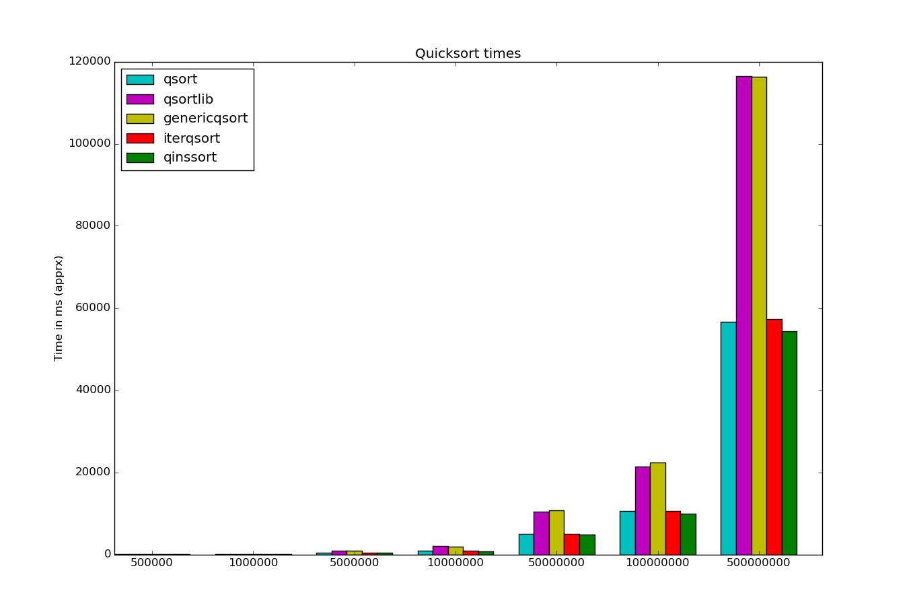

Quicksort Runtimes
So I've resolved once again to try to post to this blog once a week or so. Hopefully it'll help motivate me to make more progress on my programming projects so I'll have something to say. In addition, maybe I'll eventually make this site look like it wasn't built in the 90's.
STATUS UPDATE 2/4/16: epic failure, recommitting.
Anyway, I've been tinkering with my collection of sorting algorithms and the benchmarking program I wrote for them years ago. I've also been looking at how to display the timing results in a pretty graph. For now I'm playing with matplotlib in python.
On to the coding! I wanted to see how my algorithms stacked up against the C stdlib qsort function (and C++'s std::sort but I only made a graph for C). Since it uses a C style generic quicksort I decided to write my own version with the same interface and compare all my quicksort variations.
- qsort, standard recursive implementation
- qsortlib, C's qsort function
- genericqsort, my version of above
- iterqsort, iterative version of qsort
- qinssort, same as 1 but switches to insertion sort <=25 elements

As you can see, the 3 non-generic implementations 1, 4 and 5 all perform roughly the same, especially at higher N, while the 2 generic versions are about half as fast due to the extra overhead involved. My generic version is a tad slower but I think I'll try adding insertion sort for smaller groups and see if that makes the difference.
You can see the code I used here. I compiled it as is but am only talking about main.c, or benchmark, not cppbenchmark.
Running this from the build directry (after build and running benchmark)
will generate the graph. I had to expand and save it manually ...
I need to figure out sizing the whole image programmatically.
python3 ../plotbarchart.py